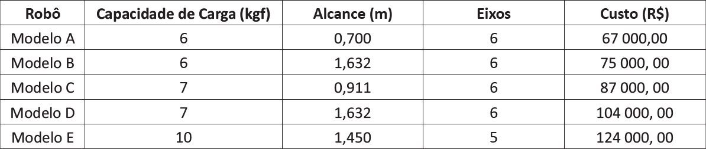

Considere que em uma célula de produção de determinada fábrica opera-se todos os dias em 3 turnos (4 funcionários, um por turno e um para revesamento) para executar os planos de produção de uma família de peças. O proprietário da fábrica, que possui conhecimento na área de automação, está avaliando a hipótese de substituir os funcionários da célula de produção por um robô manipulador. A instalação é composta por um centro de usinagem CNC e por um sistema de visão, sendo 160 cm a distância entre os respectivos pontos de manipulação. O peso das peças produzidas varia de 2 kgf a 5 kgf e optou-se pela utilização de um braço robótico equipado com uma garra pneumática de 1,5 kgf.
O quadro a seguir apresenta as principais características de modelos robóticos disponíveis no mercado.
Em relação ao caso apresentado, faça o que se pede nos itens a seguir.